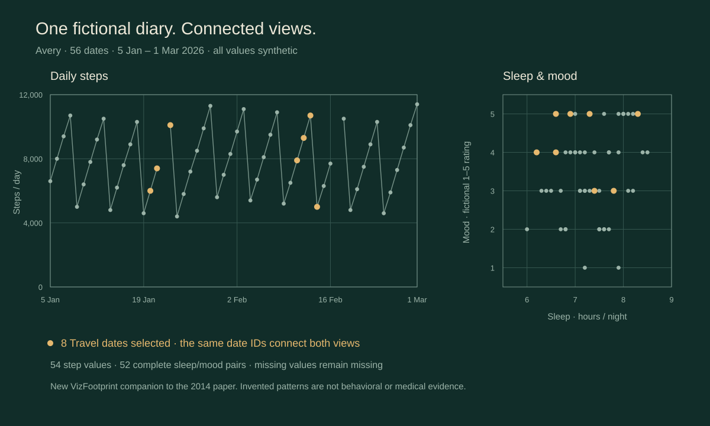

Research / IC3I 2014
Personal InformaticsWeave Your Numbers
2014 International Conference on Contemporary Computing and Informatics (IC3I) · pp. 1211–1214 · IEEE
Original abstract
Published in 2014. The statements below describe the tools and system presented at that time.
There are often several interconnected complex factors affecting one's healthy behavior. Visualization of a single factor, as current tools provide, is limited and makes overall analysis difficult. We describe a system that supports both the self-monitoring of vital statistics as well as the collaborative exploratory analysis of multivariate contextual and behavioral information with respective domain experts. These analyses, data and visualizations are automatically shared through the use Google Drive.
Bring context into view
Explore daily measures together, with the date connecting every view.
The 2014 system brought measurements from different sources into coordinated views. A Weave session preserved data, interactions and chart settings; Google Drive supported sharing with domain experts and revision history.
The new companion makes linked exploration tangible with one fictional diary. Its steps timeline, sleep/mood scatterplot and daily table share the same dates. A selection becomes an exploration step that you can revisit, branch from and replay.

Explore Avery’s diary
Select a date range or context, inspect the same days across views, and keep the exploration path.
56 fictional days, connected
Synthetic dataStart with Avery’s eight-week diary. Brush the timeline or scatterplot, choose table rows, and compare selections across Routine, Weekend and Travel contexts. Use VizFootprint’s time travel, branches and saved sessions to revisit the exploration.
Runs locally in your browser. All diary values are invented; no live accounts are connected.
Data, checks & scope
The deterministic fixture covers 5 January–1 March 2026 inclusive for Avery, a fictional person. Steps use steps/day, sleep uses hours/night, and mood is a fictional ordinal rating from 1 to 5. Each metric has 54 defined values. Six fields are missing across five dates and remain explicit null values.
The generator and tests verify the date range, stable daily IDs, joined measurements, numeric domains, missing-value counts and data fingerprint. The fixture contains no collected personal data. Its mood scale is illustrative, and patterns in these rows are not behavioral or medical findings.
This is a modern teaching companion. Native VizFootprint branches and local session files are implementation choices for this release. The original system’s Google Drive/OAuth sharing and expert collaboration are outside the companion’s scope, along with live wearable connections, automated data mining and alerts.
The figure and companion were newly produced for this page. The original paper and author-uploaded full text are linked above.
Cite the paper
Cite the 2014 conference paper for its research contribution. When describing this companion, also identify its synthetic fixture and software versions.
@inproceedings{anbalagan2014personal,
author = {Anbalagan, Sanjay Krishna and Grinstein, George and Purushe, Shweta},
title = {Personal Informatics: {Weave} Your Numbers},
booktitle = {2014 International Conference on Contemporary Computing and Informatics (IC3I)},
year = {2014},
pages = {1211--1214},
publisher = {IEEE},
doi = {10.1109/IC3I.2014.7019775},
url = {https://doi.org/10.1109/IC3I.2014.7019775}
}